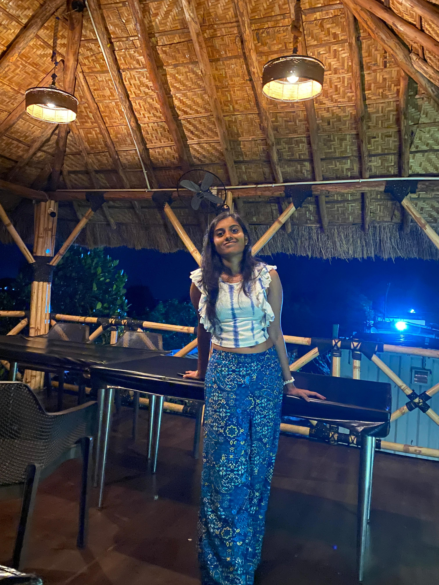
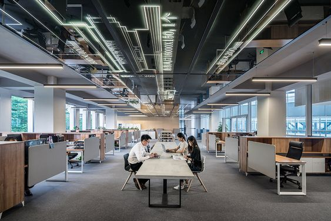
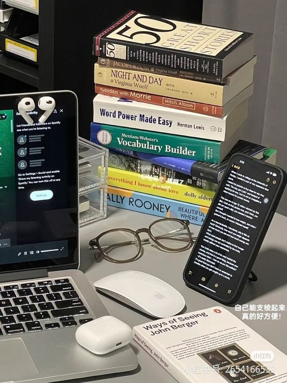

Intro

Hello viewers!
This is Indupriya, a sophomore, currently pursuing B.Tech in Computer Science and
Engineering at Nit Patna.
My interests range from full-stack development, distributed systems, big data
to AI and am always eager to explore new technological horizons. In my spare time, I enjoy investing in
learning and
exploring new technology.
For interesting stuff about me, dive HERE
Work

Currently am an upcoming fellow at Headstarter AI. As an enthusiastic and dedicated professional, I
thrive at the intersection of technology and sustainability.
My diverse experience spans developing
web applications, managing projects, and leveraging AI to create impactful solutions.
I am
passionate about crafting tools that enhance user experience, promote sustainable living, and
simplify complex problems.
You can peep into my work and interests here
My personal interest and learning range from basic maths to the big data, AI-ML, Blockchain
technology and cloud computing.
In addition to my technical pursuits, I have a keen interest in
promoting sustainable practices.
I developed a web application that helps users calculate and track
their environmental impact, providing actionable recommendations for reducing their carbon
footprint.
My goal is to merge my technical expertise with my passion for sustainability to create innovative
products that make a positive difference.
I am always eager to connect with like-minded
professionals, share insights, and explore new opportunities.
About

My parents put a computer in my bedroom in 2014 when I was 10. It was an old Tandy that ran MS-DOS.
My favorite games were Street Rod 2, Wolfenstein 3D, Pokemon go, and Tom and Jerry. It had a
mechanical keyboard and a turbo button. To this day, I still don't know what pressing the turbo
button really did.
At 7, I discovered the mini-games hidden in Microsoft Office. I also beat Minesweeper on expert for
the first time.
At 8, my parents bought me a Nexus 7 tablet which turned me into a gadget addict.
When I was 12, I set the all-time high record at my local laser tag facility by reverse engineering
the charging station and weapon protocols with a photo-resistor, micro-cassette recorder, and a lot
of patience. I was unstoppable.
At 13, I went to space camp and fell in love. I went back two more times and promised myself that
I'd work in space. I've since helped build three generations of satellites and have contributed to
two more.
At 18, I took my first ALL India exam via which I secured a seat in NIT-P university .
At 20, I have been typing all above stuff on the website that you are reading now.
Ask me in person for other stories that I'm afraid to share with the internet. By the way, check out
my awesome work.
I LIKE
E-sports, Skiing, Travelling, Space, Summer, Colored pencils (Faber-Castell Polychromos),
Photography
Good design
Travel / Geography
I am originally from Hyderabad, Telangana. I have since lived in Hyderabad and Patna.
I've been to all the southern states of India, many of which I would like to revisit.
In 2016, I visited Dubai, UAE...loved the GLOBAL VILLAGE and FERRARI WORLD.
In 2017, I visited Zambia, South Africa.
FUN FACTS
I have a list of thousands of ideas, like creating matching bow ties for cats and humans.
I almost always have a sketchbook with me and a 01 Sakura Pigma Micron Pen.
I can't locate every country on a map.
I break about 30 traffic laws on a skateboard or bicycle every single day.
I stack-rank coffee shops, restaurants, and every dog I see here.
I dream of...
Inspiring and feeling inspired.
Enabling a brighter future for everyone, regardless of political or socioeconomic status.
Treating every individual with genuine kindness and respect.
Staying curious.
Continually improving.
Contact
AI & ME
 "AI is not just about building smart machines, but about creating systems that can enhance human capabilities and solve real-world problems."
"AI is not just about building smart machines, but about creating systems that can enhance human capabilities and solve real-world problems."
Artificial Intelligence (AI) is not just a buzzword—it's a revolutionary force that's transforming the way we live, work, and interact with the world.
Here are some cool stuff to explore..reason why I love AI..
boredhumans
easywithai
microsoftai
fastai
Here is some interesting news stuff about AI:
openai
h2oai
datarobot
Few hand-on pasttime sample touches you can check-out..
daily news
Typing speed test
shop your style
freestyle draw
connect4
match cards
image resizer
animal shop
keylogger